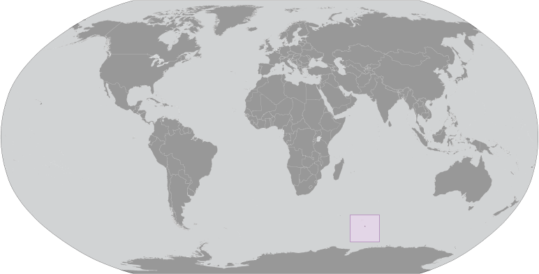
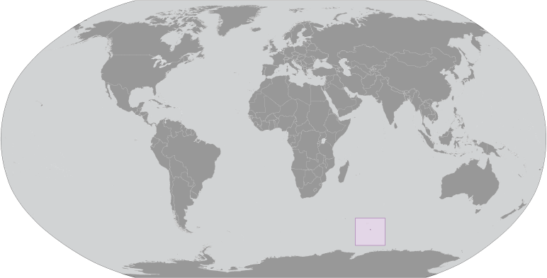

Antarctica ::
Heard Island and McDonald Islands
-
Introduction :: Heard Island and McDonald Islands
-
Background:The UK transferred these uninhabited, barren, sub-Antarctic islands to Australia in 1947. Populated by large numbers of seal and bird species, the islands have been designated a nature preserve.
-
Geography :: Heard Island and McDonald Islands
-
Location:islands in the Indian Ocean, about two-thirds of the way from Madagascar to AntarcticaGeographic coordinates:53 06 S, 72 31 EMap references:Antarctic RegionArea:total: 412 sq kmland: 412 sq kmwater: 0 sq kmcountry comparison to the world: 203Area - comparative:slightly more than two times the size of Washington, DCLand boundaries:0 kmCoastline:101.9 kmMaritime claims:territorial sea: 12 nmexclusive fishing zone: 200 nmClimate:antarcticTerrain:Heard Island - 80% ice-covered, bleak and mountainous, dominated by a large massif (Big Ben) and an active volcano (Mawson Peak); McDonald Islands - small and rockyElevation:0 m lowest point: Indian Ocean2745 highest point: Mawson Peak on Big Ben volcanoNatural resources:fishLand use:agricultural land: 0% (2011 est.)arable land: 0% (2011 est.) / permanent crops: 0% (2011 est.) / permanent pasture: 0% (2011 est.)forest: 0% (2011 est.)other: 100% (2011 est.)Natural hazards:Mawson Peak, an active volcano, is on Heard IslandEnvironment - current issues:none; uninhabited and mostly ice coveredGeography - note:Mawson Peak on Heard Island is the highest Australian mountain (at 2,745 meters, it is taller than Mt. Kosciuszko in Australia proper), and one of only two active volcanoes located in Australian territory, the other being McDonald Island; in 1992, McDonald Island broke its dormancy and began erupting; it has erupted several times since, most recently in 2005
-
People and Society :: Heard Island and McDonald Islands
-
Population:uninhabited
-
Government :: Heard Island and McDonald Islands
-
Country name:conventional long form: Territory of Heard Island and McDonald Islandsconventional short form: Heard Island and McDonald Islandsabbreviation: HIMIetymology: named after American Captain John HEARD, who sighted the island on 25 November 1853, and American Captain William McDONALD, who discovered the islands on 4 January 1854Dependency status:territory of Australia; administered from Canberra by the Department of Sustainability, Environment, Water, Population and Communities (Australian Antarctic Division)Legal system:the laws of Australia, where applicable, applyDiplomatic representation in the US:none (territory of Australia)Diplomatic representation from the US:none (territory of Australia)Flag description:the flag of Australia is used
-
Economy :: Heard Island and McDonald Islands
-
Economy - overview:The islands have no indigenous economic activity, but the Australian Government allows limited fishing in the surrounding waters. Visits to Heard Island typically focus on terrestrial and marine research and infrequent private expeditions.
-
Communications :: Heard Island and McDonald Islands
-
Internet country code:.hm
-
Transportation :: Heard Island and McDonald Islands
-
Ports and terminals:none; offshore anchorage only
-
Military and Security :: Heard Island and McDonald Islands
-
Military - note:defense is the responsibility of Australia; Australia conducts fisheries patrols
-
Transnational Issues :: Heard Island and McDonald Islands
-
Disputes - international:none